| Purpose |
| Overview of Payment Terms and Advanced Payment Terms |
| Scope |
| Details |
| Commonly Used Payment Terms |
| Types of Payment Terms |
| Understanding Standard Payment Terms (P0014) |
| Setting Up Standard Payment Terms |
| Standard Payment Term Examples |
| Due Upon Receipt |
| Net Due Date |
| Proximate Date |
| Fixed Days |
| Split Payment Term |
| Net Due Date with Discount |
| Payment Terms Report (R0014) |
| Understanding Advanced Payment Terms (P0014, P00145, P00146) |
| Adding a Work Day Calendar |
| Defining Due Date Rules |
| Defining Date Ranges for Due Date Rules |
| Setting Up Multitiered Discounts for Due Date Rules |
| Updating Discounts with Multitiered Discount Payment Terms |
| Verifying Due Date Rules |
| Defining Advanced Payment Term Codes |
| Defining Installments for Payment Term Codes |
| Advanced Payment Term Examples |
| Calendar: Work Day Rule |
| Calendar: Annual Payment |
| Calendar: Payments Due on a Specific Day of the Week |
| Calendar: Payments Due Last Day of the Month, 45 Days After the Invoice Date |
| Date Range |
| Date Range: Payments Due Last Day of the Month, 45 Days After the Invoice Date |
| Fixed Date Range |
| Multitiered Discount |
| Installments |
| Understanding Due Date versus Net Due Date Fields |
| Payment Terms in Accounts Payable |
| Create Payment Control Groups (R04570) |
| T Accounts for Vouchers with Discounts |
| Payment Terms in Accounts Receivable |
| Manual Receipt Entry (P03B102) |
| T Accounts for Invoice with Discounts |
| Understanding Tax Rules (P0022) and Discounts |
| Examples of Tax Rules (P0022) On Discounts |
Payment terms are used by the JD Edwards EnterpriseOne Accounts Payable and Accounts Receivable systems to specify a payment due date and, optionally, a discount percent and discount due date. The system uses Payment Terms to calculate the due dates and discounts on vouchers and invoices for efficient transaction entry.
Each customer and supplier may have a default Payment Term defined that are used automatically when creating a voucher or invoice. The default value can be accepted or overridden with a different Payment Term.
Payment Term Codes can range from simple to complex, depending on your organization's policies.Payment Terms can be defined by using a one-, two-, or three-character combination of these types of characters:
For example, you might use A1%, which combines all three types of characters, for a percentage Payment Term Code. The JD Edwards EnterpriseOne Accounts Payable and Accounts Receivable modules use the same payment terms.
This document is intended for users who are setting up and revising Payment Terms to be used in the Accounts Payable and Accounts Receivable modules.
It is recommended that a blank Payment Term Code be configured for the most commonly used Payment Term. However, there should also be an identical Payment Term that has a code other than blank to be used as an override during voucher and invoice entry. If a non-blank Payment Term is the default on the customer or supplier record, changing the Payment Term to blank during entry does not replace the default Payment Term. For example, if the supplier master record is set up to use 001 as the payment term code, and you want to override it on the voucher to the blank payment term code, the system will continue to supply the default (001) from the supplier record every time the field is cleared.
Blank Payment Term
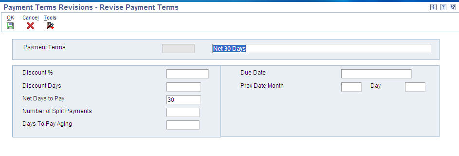
Corresponding Override Payment Term
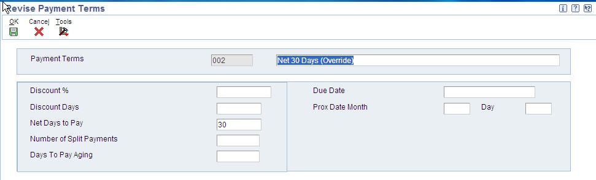
Two types of payment terms are available Standard and Advanced.
| Standard Payment Terms | Advanced Payment Terms |
|---|---|
|
Define Due Dates by:
|
Define Due Dates by:
|
|
|
| Payments can be split into multiple payments. You can specify a Due Date for the first payment and the number of days to add to each remaining payment. | Payments can be divided based on percentage. For example, the amount of the first payment might be 20% of the total amount and the amount of the second and third payments might each be 40% of the total. |
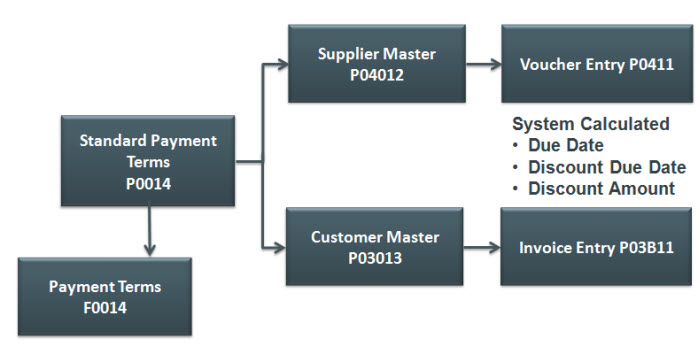
To begin setting up Standard Payment Terms, select Payment Term Revisions from the Payment Term Revisions (G00141) menu. From Work with Payment Terms (P0014) form, you can create a new payment term or revise an existing payment term.
When entering a new Payment Term, you must enter a unique code that specifies the terms of payment in the Payment Term Code (data dictionary item PTC field). Examples of payment terms include:
The following is a description of the rest of the fields available on Standard Payment Terms:
| Fields | Field Description |
|---|---|
| Due Date (DDJ) | If the Payment Term is to be used in the JD Edwards EnterpriseOne Accounts Receivable module, enter the date that the net payment is due. Conversely, if the Payment Term is to be used in the Accounts Payable module, enter the date that the payment is due to receive a discount. If no discount is offered, enter the net due date. |
| Net Days To Pay (NDTP) | Enter the number of days that the system adds to the invoice date to calculate the due date on the invoice or voucher. If you use split payment terms, the system uses the value from this field to calculate the due date for the first split payment. |
| Discount % (DCP) | Enter the percent of the total invoice or voucher that you will allow a discount if it is paid within the discount period. Enter the discount percent as a decimal, for example, a 2 percent discount is .02. |
| Discount Days (DCD) | Enter the number of days after the invoice date that an invoice or voucher must be paid to receive the discount. The system adds the number of days specified to the invoice due date to calculate the discount due date. |
| Prox Date Month (PXDM) | Enter the number of months that the system adds to the invoice date to calculate the due date. The system uses this field in conjunction with the value specified in the Proximate Day field (PXDD) to calculate the due date.
|
| Day (PXDD) | Enter the day that the invoice or voucher is due. The system uses this field in conjunction with the value in the Proximate Month field (PXDX) to calculate the due date. For example, if the proximate month is 1 and proximate day is 15, the system calculates the due date as the 15th of the next month. |
| Number of Split Payments (NSP) | Enter the number of equal, consecutive payments into which you want the system to divide the invoice or voucher. For example, if the number of split payments is 3, the system divides the invoice or voucher into three equal payments. You can use split payments only if the number of days between payments is a constant number, such as 30. For amounts that are not equally divisible, the system uses soft rounding. |
| Days To Pay Aging (DTPA) | Enter the number of days that the system uses to calculate the due date for each subsequent payment if you use split payments. For example, if the number of split payments is 4 and the days to pay aging is 30, the system adds thirty to the due date calculated for the first payment to obtain the due date for the second payment. The system adds 30 to the second payment to obtain the due date for the third payment, and so on. The system uses the value from the Net Days to Pay field to calculate the due date for the first payment. |
A Due Upon Receipt Payment term is when the payment is due upon the receipt of goods and services. In terms of EnterpriseOne Standard Payment Terms, a Due Upon Receipt payment term creates a Due Date the same day as the Invoice Date. This payment term is set up with blank fields so no calculation is made.

Example results:
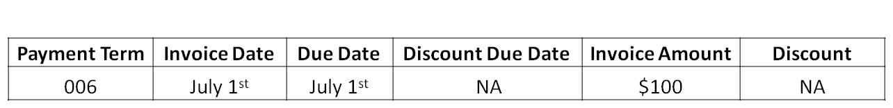
A Net Due Date payment term is where the payment is due a set number of days after the invoice date. For example, if you want a due date that is 30 days after the invoice date, a Standard Payment Term would be set up with a Days to Add value of 30.

Example results:
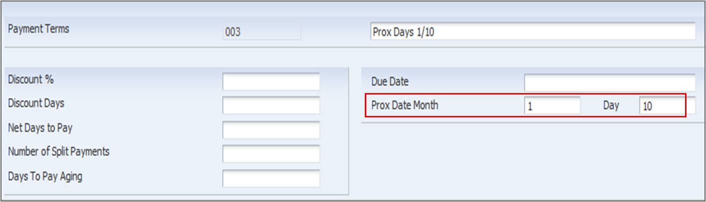
A Proximate Due Date rule calculates a payment due date a set number of months after the invoice datea nd on a specific date in that month. For example, if a payment needs to be due on the 10th day of a month, 2 months after the invoice date, the Payment Term can be set up as follows:
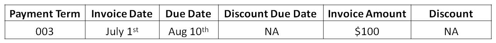
Example results:

A Fixed Days payment term is where a due date is a specific day regardless of the invoice date.

Example results:
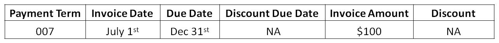
A Split Payment Term calculates multiple pay items on an invoice or voucher with separate due dates. Standard Payment Terms provides the ability to split into multiple pay items of the same amount.
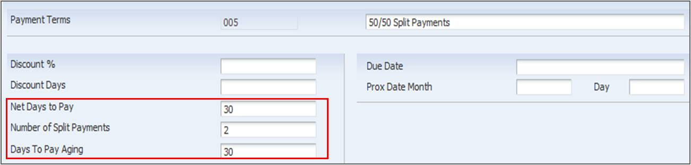
Example results:

This example illustrates how a Standard Payment Term (P0014) would look like if it was for a Net Due Date with a Discount Percentage.

Example results:
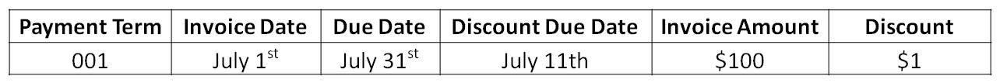
To get a printed list of Standard Payment Terms that are currently defined, run the Payment Terms Report (R0014). This report is helpful for users who may be entering vouchers or invoices or updating default payment terms in customer or suppliers.
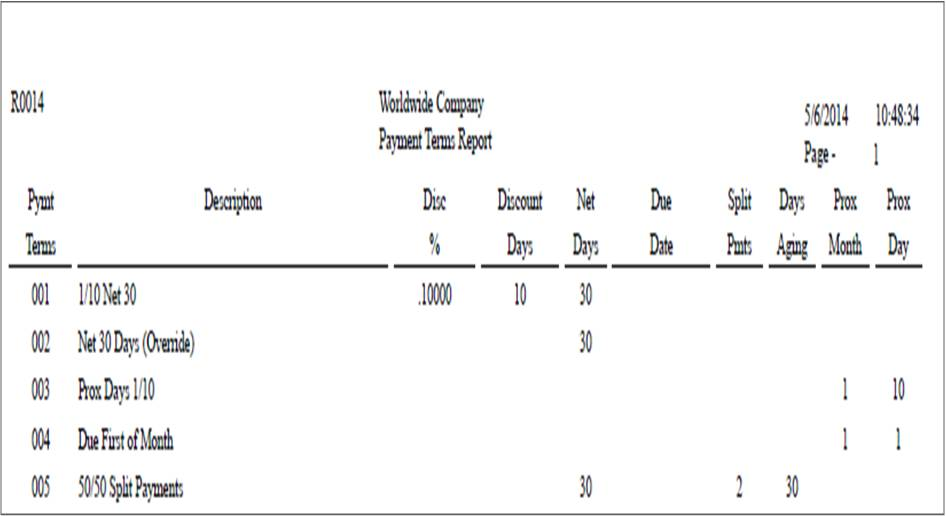
Advanced Payment Terms provide further customization options for Payment Due Dates with the addition of Due Date Rules. Due Date Rules provide the following functionality:
The system stores advanced payment term information in the following tables:
The programs used to set up Advanced Payment terms can be accessed from the Payment Terms Revisions (G00141) menu.

The first step in adding a Work Day Calendar, is defining the Calendar Type in UDC table 42/WD (Work Day Calendar Type). The Description (data dictionary item DL01) field should be used to specify the calendar's use. For example, it might be specific to an industry such as banking. After the desired calendar types are defined, the Work with Workday Calendar program (P00071) can be used to add a new calendar.
Important Fields:
| Fields | Field Description |
|---|---|
| Calendar Type (WDCT) | For calendars that are going to be used in the Accounts Payable and Accounts Receivable modules, this field should be left blank. |
| Calendar Month (MT) | Enter a number that corresponds to the month in a calendar year. |
| Calendar Year (YR) | Enter the calendar year. |
| Shift Code (SHFT) | This field is for Payroll and Time Entry and does not apply to payment terms. A code from UDC table 00/SH (Shift Codes) that identifies daily work shifts is entered here. In payroll systems, a shift code can be used to add a percentage or amount to the hourly rate on a timecard. |
| S, M, T, W, T, F, S | Enter a value from UDC table 00/TD (Type of Day) that specifies the type of work day for each date. Examples of valid values include:
|
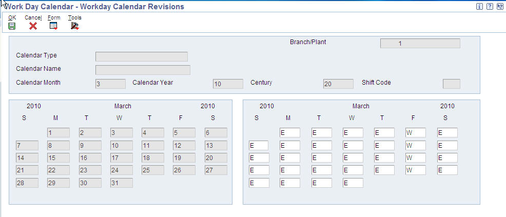
Due Date Rules are defined using the Work with Due Date Rules (P00146) application. The following fields are used for contracts only:
Important Fields:
| Fields | Field Description |
|---|---|
| Due Date Rule (DDRL) | Enter a code that specifies the name of the new Due Date Rule. |
| Based on Date (DABS) | Enter the date the system uses to calculate the net due date and discount due date. Valid values are:
|
| Days to Add (DADD) | Enter the number of days the system adds to or subtracts from the date specified in the Based on Date (data dictionary item DABS) to calculate the discount due date or the net due date. If subtracting days from this date is desired, specify a negative number in this field. |
| Fixed Days (DYFX) | Enter the day that a payment is due. The system uses this field in conjunction with the value in the Months to Add (data dictionary item MADD) field to calculate the discount due date or the net due date. For example, if this field has a value of 20 there is a 1 in the Months to Add (data dictionary item MADD) field, and the Based on Date field is 1 (invoice date), the system calculates the due date as the 20th day of the month following the Invoice Date. |
| Months to Add (MADD) | Enter the number of months to add to or subtract from the date specified in the Based on Date (data dictionary item DABS) to determine the discount due date or the net due date. The system uses this field in conjunction with the Fixed Days (data dictionary item DYFX) field and Days to Add (data dictionary item DADD) field to calculate the due date. For example, if the Fixed Days (data dictionary item DYFX) is 20, the Months to Add (data dictionary item MADD) field is 1 and the Based on Date (data dictionary item DABS) field is 1 (invoice date), the system calculates the due date 20th day of the month following the Invoice Date.If the Fixed Days (data dictionary item DYFX) field is used in conjunction with a date range and lies outside the range, the Months to Add (data dictionary item MADD) is not necessary. The system automatically uses the fixed date of the next month. For example, if the date range is 21-31 and the Fixed Days (data dictionary item DYFX) is the 10th, the system uses the 10th day of the following month. |
| Calendar (CALN) | Enter the name of the calendar that differentiates between working days, holidays, weekends, and so forth. This value must exist in the Workday Calendar table (F0007). The system uses this field in conjunction with the Work Day Rule (data dictionary item WKDY) field to determine final due dates if the system calculates a due date on a weekend or holiday. |
| Work Day Rule (WKDY) | Enter a code that specifies if non-working days should be included in the due date calculation. Valid values are:
|
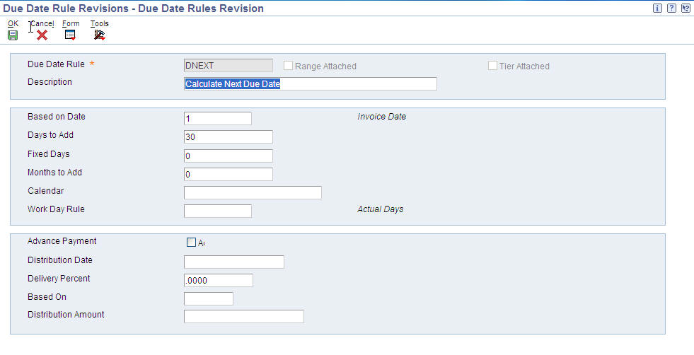
Date Ranges are defined by selecting the Date Range option from the Form exit in the Due Date Rules Revision (P00146) application.
Important Fields
| Fields | Field Description |
|---|---|
| From Day (FMDY) | Enter the beginning number for the range of days. The system uses this field in conjunction with the To Day (data dictionary item TODY) field to establish the range of days. |
| To Day (TODY) | Enter the ending number for the range of days. The system uses this field in conjunction with the From Day (data dictionary item FMDY) field to establish the range of days. |
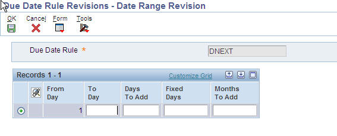
Note: When using a date range, the system always uses the last day of the date range to apply the rule. For example, if you specify a range of 1–15 and a rule that adds 3 days, the system calculates the due date on the 18th if the based-on date is between 1 and 15. The system does not add 3 days to each day specified in the date range; it adds three days to the ending date of the range
Multitiered discounts are defined by selecting the Multitiered option from the Form exit in the Due Date Rules Revision (P00146) application.
Important Fields
| Fields | Field Description |
|---|---|
| Discount Percentage (DCP1) | Enter the percent of the total invoice or voucher that you will discount if it is paid within the discount period. This value should be written as a decimal. |
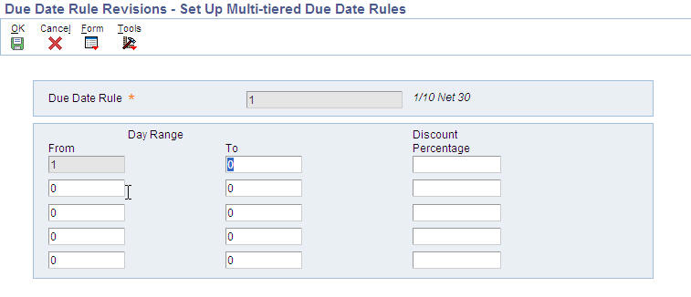
To calculate new discount percentages and discount due dates on invoices or vouchers that are assigned a multitiered discount payment term, the Update A/R Invoices program (R005142) or the Update A/P Vouchers program (R005141) can be run. The reports work similar in both Accounts Payable and Accounts Receivable. They use the date defined in Processing Option 1: As Of Date to determine what transactions are eligible for update and what tier should be used. For example, a payment term is set up with the following:
If an invoice exists with an Invoice Date of June 1 and the Processing Option 1: As Of Date is set to June 12, the system recalculates the discount amount as 5% per the second tier.
From Due Date Rule Revisions (P00146), the Simulator program can be accessed either through the Row exit and provides a validating tool for hypothetical due dates.
Advanced Payment Terms are configured in the Work with Advanced Payment Terms (P00145) application.
Important Fields
| Fields | Field Description |
|---|---|
| Payment Term (PTC) | Enter a code that identifies the terms of payment. Use a blank code to indicate the most frequently used payment term. Examples of valid payment terms include:
|
| Discount % (DCP) | Enter the percent of the total invoice or voucher that is discounted if paid within the discount period. This value needs to be entered as a decimal. The system ignores a value entered in this field if using installment or multitiered discounts. |
| Discount Due Date Rule (DDDR) | Enter the rule that the system uses to calculate the discount due date of an invoice or a voucher. Leave this field blank if there is no value in the Discount % (data dictionary item DCP) field. |
| Net Due Date Rule (NDDR) | Enter the rule that the system uses to calculate the net due date of an invoice or a voucher. |

Installments are configured by selecting the Installments option from the Row exit in the Work with Advanced Payment Terms (P00145).
Important Fields
| Fields | Field Description |
|---|---|
| Number of Equal Payments (NTRN) | Enter the number of transactions to be processed. The system calculates the percentage of the installment based on the number in this field. For example, if the value is 5, the system generates 5 installments for 20 percent. If the value in this field does not divide equally into 100, the system assigns the unequal percent to the last installment. |
| Percent of Installment (PSPL) | Enter a percentage of the invoice that the system will use to generate one installment payment. The installments do not have to be equal but the sum must be equal to 100 percent. This field does not need to be entered as decimals. |

Note: For more information on how to set up work day calendars, and on their use in other modules, refer to these additional knowledge documents below:
The following set up illustrates a Due Date Rule that utilizes a work day calendar to determine working days so that the due date is calculated only using working days.

Example results:
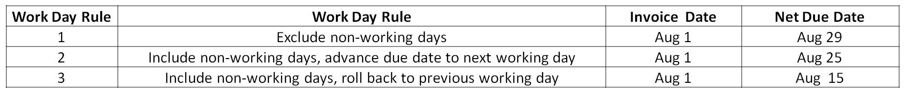
This example illustrates how the Work Day Calendar can be used to create an annual due date rule. Annual due date rules are when the due date is always on the same day every year, this is usually used for things like magazine subscriptions. For this, the work day calendar is set up to have that specific date each year as the only working day for the year. This example shows it as May 14. The down side to this set up is that a work day calendar must be set up for every month of every year.
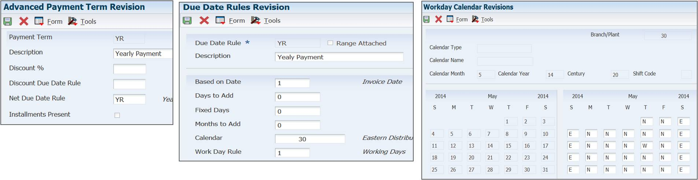
This example illustrates how the Work Day Calendar (P00071) can be used to create a Due Date Rule that requires a payment due date to be on a specific day of the week. This example uses Wednesday as the required day of the week, but it can be set up for any day of the week. The payment term with this set up calculates due dates on a Wednesday, 15 days after the invoice date.
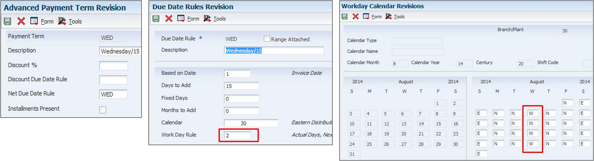
Example results:

This set up can be used to calculate the due date of an invoice or voucher as the last day of the month, 45 days after the invoice.
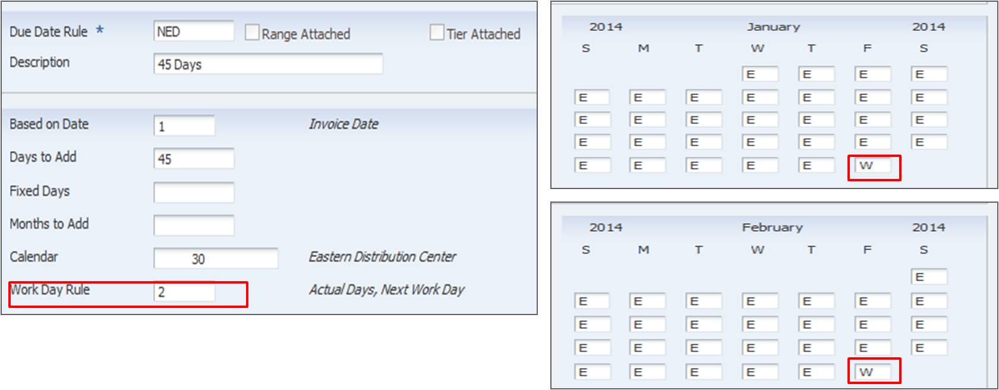
Example Results:

This example illustrates the set up for a Due Date rule using a Due Date Range.

Example Results:
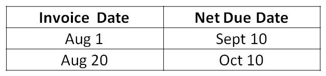
The Date Range functionality can also be used to calculate due dates as the last day of the month, 45 days after the invoice date. This can be used instead of the work day calendar option as shown previously. To do so, use the set up as shown in the following screenshots.

Example Results:

Date Ranges can also be used to determine the due date based on when the invoice date was in the month. This example shows transactions entered prior to or on the 10th of the month are due 20 days from the 10th and transactions entered after the 10th of the month are due date 20 days from the 10th of the following month.

Example Results:
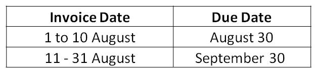
With Advanced Payment Terms, you can set up multitiered discounts as well. This example set up shows how you can have a multitiered discount that is 10% of the invoice amount up until 10 days after the Invoice Date. After the 10th, the Date Update AP Vouchers (R005141) or the Date Update AR Invoices (R005142) can be run and the discount amount changes to 5%.

Example Results:

Advanced Payment Terms can also be used to create installments, which can break up a transaction into multiple pay items. Each pay item can be set up with different due date rules, so they can have very individual due dates. In this example, any voucher or invoice created using this payment term is split into three pay items. All three pay items are using the same due date rule. Two of them are for 25% of the original total and the last one is for 50%. Each pay item also can have a different discount percentage.

Example Results:

When a voucher is entered, the system automatically calculates the Net Due Date and the Discount Due Date based on the Payment Terms. The Payment Terms default from the Supplier Master (P04012) or Customer Master (P03013) but can be manually overridden at the time of voucher entry. Furthermore, the Voucher and Invoice entry programs allow for the system calculated Due Date to be changed manually. The Due Date is the date that the pay item is due and payable (for example, 30 days from the invoice date). The Discount Due Date is the final date that the pay item must be paid to receive a discount from the supplier.
After defining payment terms, in either Advanced or Standard functionality, they can then be used in Accounts Payable by:

When using Automatic Payment Processing, the Create Payment Control Groups (R04570) has four Processing Options on the Dates tab that determines how vouchers are selected based on their due dates.
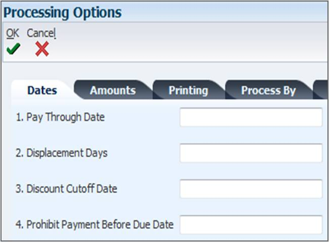
Processing Option 1: Pay Through Date - Include vouchers with a Due Date on or before the Pay Through Date. If the value in Pay Through Date is greater than or equal to Due Date, then the voucher is included in the payment group.
Processing Option 2: Displacement Days - The number of days to add to today's date to include vouchers with a Due Date on or before that date.
Processing Option 3: Discount Cutoff Date - The final date that a discount is allowed to be taken. Vouchers with a Discount Due Date after this date are eligible. If the Discount Due Date is greater than or equal to the Discount Cut Off Date, then the Discount is applied to the payment.
Processing Option 3: Prohibit Payment Before Due Date - Specify to include or exclude a voucher if the Discount Due Date has passed, but the Net Due Date has not. If this is set to 1, then the payment is prohibited prior to the Net Due Date.
For more information on Create Payment Control Groups (R04570), please see E1: 04: How To Create Automatic Payment Control Groups (R04570, P040047, P0030G, P0417, P0415) (Doc ID 1300877.1).
Please note that Discount Available table indicates the account related to PKD AAI and the Discount Lost table indicates the account related to PKL.
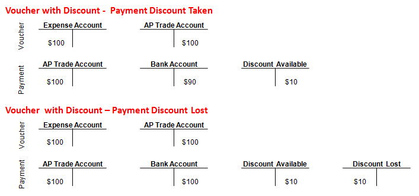
After defining payment terms, in either Advanced or Standard functionality, they can then be used in Accounts Receivable by:

The Processing Options on the Discount tab of Manual Receipt Entry (P03B102) are used to determine how discounts can be taken when using this application to enter receipts.

Processing Option 1: Discount Available - This processing option determines if a discount can be taken if the amount entered is greater than the Discount Available amount on the invoice.
Processing Option 2: Discount Applied - This processing determines if a discount amount can be taken on a receipt if the amount taken is greater than the actual payment amount toward the invoice.
Processing Option 3: Grace Period Days - The number of days to add to the discount Due Date to extend the period during which a discount can be taken.
Processing Option 4: Discount Reason Code - This value is pulled from UDC 00/DE and determines the default reason code for when discounts are taken. Please note that a corresponding AAI RKDxxx (where xxx is the Reason Code) must also exist.
For more information on Manual Receipt Entry (P03B102), please see E1: 03B: How To Create Manual Receipts In EnterpriseOne Accounts Receivable (P03B102, P03B0001) (Doc ID 1451219.1).
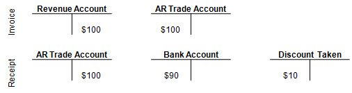
Tax Rules (P0022) are important in how Discounts are calculated, whether using Advanced or Standard Payment Terms. The fields important in Tax Rule Revisions (P0022) are highlighted in the following screenshot.

For more information on Tax Rule Revisions (P0022) and Set up, please see E1: FIN: How To Understand Tax Set Up Within JD Edwards EnterpriseOne Financial Management (P0022, P4008, P0004A, R0018P, P73GE0) (Doc ID 1413283.1).
Example 1:


Example 3: